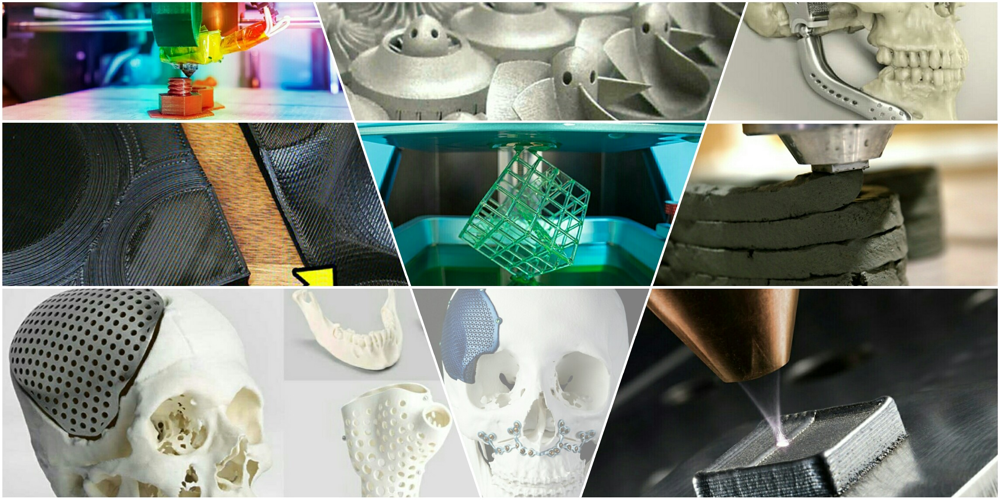

As An Engineer
I'd completed my graduation in Mechnaical Engineering. I'd started my journey by admissioning in Diploma Mechanical Engineering; And than went for Bachelor's in Mechanical Engineering.I have adored a diverse technical skill regime with proficiency along with the designing skills and developing a component from concept to manufacture.
My current experience giving me direction to the continuous improvement in my fundamentals with FDM, SLA, DLP Technology and performing with new materials variant with new techniques to get this tech widespread in between individuals. Forwarding own self with future tech like , DMLS, EBM, MJF etc. and aiming to grow further.
In my current position as an 3D Printing Application & Design Engineer; I'm responsible for new R&D over materials available in different 3D Printing technology as well as to suggest for choosing best suited tech for particular components to fulfill end results. Moreover, I'm working with Doctors and Industry specific peoples to understand their needs and convert it into the newest and possible solutions to grow this new and emerging tech into useful results. Such as, I'd done Medical 3D Printing application as segmentation of Medical DICOM data to digital manufacturing data for Additive Manufacturing. My all work towards my field and career could be found out at my digital portfolio.